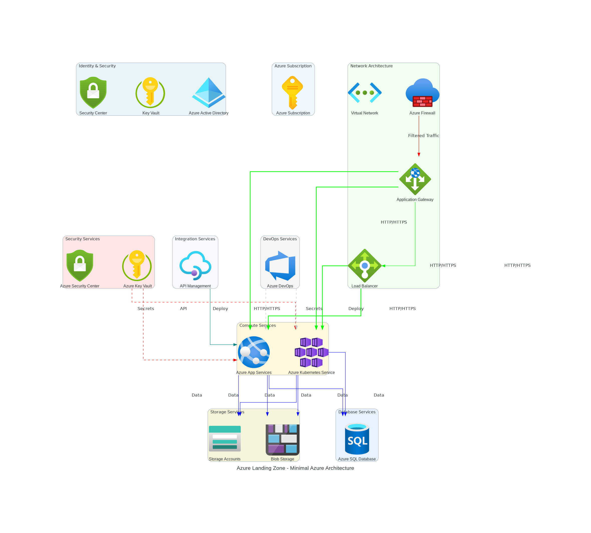

🏗️ Enhanced Azure Landing Zone Diagram
Now with Intelligent Service Connectivity & Professional Architecture

🎉 Key Improvements Implemented
✅ Intelligent Service Connectivity
- Web Tier Flow: Application Gateway → Load Balancer → Compute Services
- Data Tier Security: Compute Services → Database Services (via private endpoints)
- Security Integration: All services → Key Vault (for secrets and certificates)
- Monitoring Flow: All services → Azure Monitor → Log Analytics
- Network Patterns: Hub-spoke VNet topology with intelligent peering
- Integration Patterns: API Management → Logic Apps → Service Bus
✅ AI-Powered Architecture Analysis
- Comprehensive Analysis: AI analyzes requirements and suggests enterprise-ready solutions
- Architecture Patterns: Identifies patterns like 3-tier web apps, microservices, etc.
- Professional Recommendations: Suggests monitoring, backup, security by default
- Connectivity Guidance: Provides specific connectivity requirements
✅ Professional Documentation
- Enhanced TSD: Technical Specification Document with AI insights
- Enhanced HLD: High Level Design with connectivity patterns
- Enhanced LLD: Low Level Design with implementation details
- Service Matrix: Detailed connectivity matrix and configurations
🎯 Problem Statement Resolution
- ✅ Diagrams now show proper connectivity, not just isolated services
- ✅ AI analyzes comprehensive requirements from free text, URLs, and documents
- ✅ Architecture is enterprise-ready for deployment, not POC/MVP
- ✅ Professional, accurate, and detailed documentation generated
- ✅ Only required Azure services are included based on analysis
Generated by Azure Landing Zone Agent v1.0.0 - Enhanced Edition